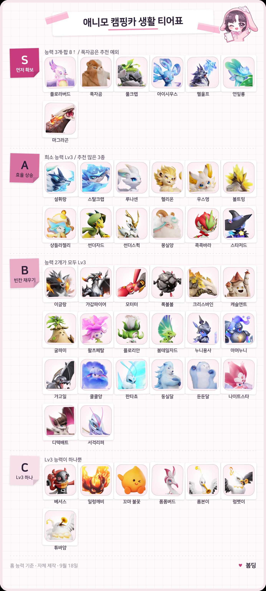
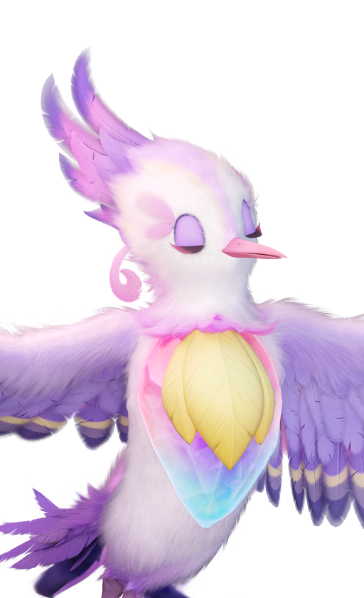
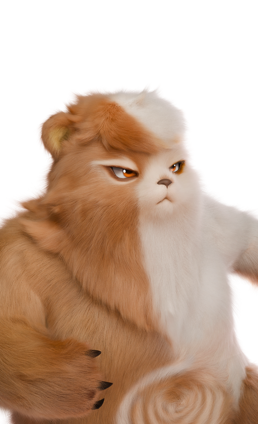
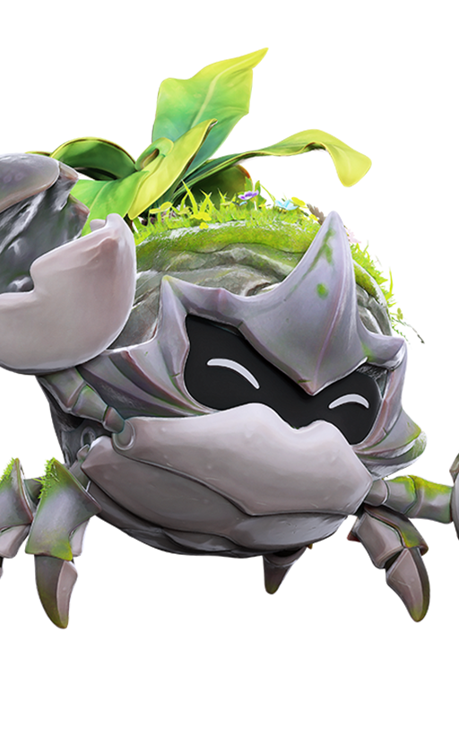
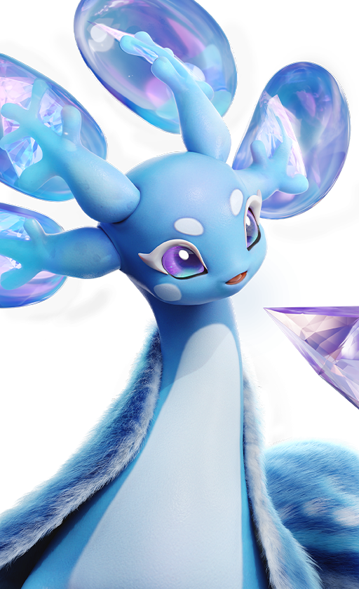

애니모 캠핑카 생활 티어표 추천, 홈 능력 13종 정리
이번 주부터 애니모 캠핑카를 채워나가고 있는데요, 막상 홈 화면을 열어보면 '뭘 여기 데려다 놔야 하지' 싶으실 거예요. PC·콘솔은 9월 16일에 열렸고 모바일은 9월 23일 오픈을 앞두고 있는데, 캠핑카 생활 콘텐츠만 놓고 어떤 애니모부터 데려와야 하는지 홈 능력 13종 기준으로 정리해봤어요.
캠핑카는 어떻게 키우고, 뭘 할 수 있나요?
캠핑카는 레벨을 올릴수록 시설이 하나씩 열리는 구조예요. 공식 개발팀의 편지에서 "캠핑카의 레벨업 경험을 개선했습니다", "홈을 여러 구역으로 구성된 대형 맵으로 확장"이라고 밝혔을 만큼, 레벨업이 곧 캠핑카 확장이에요. 흐름은 시설을 놓고 → 만들 걸 고르고 → 그 레시피가 요구하는 능력의 애니모를 배치하는 순서고요. 해보신 분들 얘기로는 2레벨은 밀 20개 줍기 정도 조건이고 6레벨 무렵부터 양조·화로·목공 시설이 열린다는 제보가 많은데, 공식 표는 아직 없어서 인게임에서 직접 확인해보시는 걸 추천드려요.
개발팀 편지 기준으로 확인된 캠핑카 기능은 이 정도예요.
- 캠핑카 파견 시 일정 확률로 천휘 특성을 지닌 애니모 알을 얻을 수 있어요.
- 밭 갈기 — 다른 모험가의 홈에 가서 밭을 갈아주면, 그 모험가가 재배한 작물을 나눠 받을 수 있어요.
- 애니홈즈 재구매소에서 안 쓰는 가구를 할인된 가격으로 되팔 수 있어요.
- 애니모 휴식 AI와 쓰다듬기 상호작용이 준비돼 있어요.
애니모 홈 능력, 뭐가 있나요?
애니모 홈 능력은 원소 9종과 작업 능력 4종, 총 13가지예요. 원소 능력은 불·풀·물·땅·전기·얼음·바람·어둠·빛이고, 작업 능력은 운반 능력(수레 아이콘)·수공예 능력(가위 아이콘)·여가 능력(바람개비 아이콘)·향수 제조 능력(추 아이콘) 이렇게 네 가지예요. 능력마다 Lv1~3까지 있고, 천휘 형태가 되면 대개 Lv4로 한 단계 더 오릅니다.
공식 위키 도감의 홈 능력 칸은 아이콘과 레벨만 보여주고 이름은 따로 없어서, 각 능력의 쓰임은 해외 팬사이트·커뮤니티 실사용 후기를 교차로 맞춰본 결과예요. 정확한 명칭은 인게임에서 확인해주세요.
| 능력(아이콘) | 커뮤니티 확인상 하는 일 | 기본형 Lv3 대표 |
|---|---|---|
| 불 능력 | 화로 등 열 관련 작업 | 이글랑 · 마그라곤 |
| 풀 능력 | 심기·수확·채집 | 연잎룡 · 콕콕바라 |
| 물 능력 | 급수·양조 | 아이시우스 |
| 땅 능력 | 광물 채굴 | 풀크랩 · 푹자곰 |
| 전기 능력 | 발전(전력 생산) | 우스멍 |
| 얼음 능력 | 냉방기 등 냉각 시설 | 설휘랑 · 스탈크랩 |
| 바람 능력 | 분쇄·방적 | 몽실양 |
| 어둠 능력 | 수확·절단·건조 | 헬울프 · 플로라버드 |
| 빛 능력 | 조명(천휘 전용) | 루나센 · 헬리온 |
| 운반 능력(수레 아이콘) | 물자 운반 · 38종 보유(가장 흔함) | 이글랑 · 푹자곰 등 다수 |
| 수공예 능력(가위 아이콘) | 가구·소품 제작 | 콕콕바라 · 우스멍(천휘) |
| 여가 능력(바람개비 아이콘) | 휴식·오락 시설 | 몽실양 · 플로라버드 |
| 향수 제조 능력(추 아이콘) | 향수 제조 · 빛 능력과 함께 가장 드문 2종 | 플로라버드(유일) |
※ 역할 칸은 위키 공식 명칭이 아니라 팬사이트·커뮤니티 교차 확인 결과예요
천휘·지역 형태면 홈 능력도 달라지나요?
네, 형태가 다르면 홈 능력도 달라져요. 천휘 형태는 보통 능력이 Lv4로 오르며 원소가 하나 더 붙고, 지역 형태는 사는 곳에 맞춰 능력이 바뀌거나 빠져요.
- 천휘 모터터 — 기본형 땅3·운반 능력3에서 땅4·운반 능력4·어둠3으로.
- 고원형 탄멍멍 — 기본형 불1·운반 능력1에 땅 능력이 하나 더.
- 해변·만·갯벌형 풀크랩 — 기본형에 있던 풀 능력이 빠지고 땅·운반 능력만 남음.
'이름이 같으니 아무거나'가 아니라, 형태를 확인하고 데려오시는 게 캠핑카 살림엔 이득이에요.
캠핑카 생활 티어표, 어떤 애니모부터 데려가야 하나요?
능력 개수와 레벨 합으로 기준을 나눴어요. 제가 홈 능력 기준으로 직접 만들어본 캠핑카 생활 티어표예요.

홈 능력 기준으로 S~C까지 나눠본 캠핑카 생활 티어표예요
자체 제작 티어표 · 출시 초기(2026-09-18) 기준
이 티어표는 제가 직접 만든 자체 제작 자료예요. 출시 초기 기준이라 패치·새 데이터가 나오면 앞으로 계속 업데이트할 계획이니 참고 부탁드려요. 기준은 이렇게 나눴어요.
- S — 능력 3개·레벨 합 8 이상(예외: 푹자곰은 추천이 가장 많이 겹쳐서 S)
- A — 능력 2개가 모두 Lv3이고 하나가 얼음·전기·빛처럼 드문 능력이거나, 초반 일꾼 추천이 많은 애니모
- B — 나머지 중 능력 2개가 모두 Lv3인 애니모
- C — Lv3 능력이 하나뿐인 애니모
전투 성능은 반영하지 않은 생활 콘텐츠 전용 기준이에요.
S티어는 일곱 마리예요. 플로라버드·푹자곰·풀크랩·아이시우스·헬울프·연잎룡·마그라곤이 여기 해당돼요.

향수 제조 능력을 유일하게 Lv3로 가진 플로라버드
이미지 출처: 애니모 공식 위키 도감
플로라버드는 어둠3·여가 능력3에 향수 제조 능력(추 아이콘)까지 3레벨인 유일한 애니모예요. 능력 레벨 합도 기본형 기준으로 도감 전체 애니모 중 1위라 가장 먼저 챙기시는 걸 추천드려요.

땅+운반 능력 콤보로 채굴·운반을 다 잡는 푹자곰
이미지 출처: 애니모 공식 위키 도감
푹자곰은 땅3·운반 능력3(천휘 땅4·운반4·어둠3)이에요. 수치로는 A에 가깝지만 커뮤니티 추천이 가장 많이 겹쳐서 S로 올렸어요.

풀·땅·운반 세 능력을 동시에 가진 풀크랩
이미지 출처: 애니모 공식 위키 도감
풀크랩은 기본형 기준 풀2·땅3·운반 능력3, 능력 3개·레벨 합 8로 S예요. 형태에 따라 풀 능력이 빠지기도 하니 형태 확인은 꼭 해주세요.

능력 3개·레벨 합 8로 S에 오른 아이시우스
이미지 출처: 애니모 공식 위키 도감
아이시우스는 물3·얼음2·운반 능력3, 능력 3개·레벨 합 8이라 S예요. 얼음은 희소해도 여기선 Lv2라, S인 이유는 얼음 희소성이 아니라 능력 개수와 합이에요.
헬울프(불2·어둠3·운반 능력3)·연잎룡(풀3·물2·운반 능력3)·마그라곤(불3·땅2·운반 능력3)도 셋 다 능력 3개·레벨 합 8이라 S예요.
A티어는 열두 마리, 능력 2개가 모두 Lv3이고 하나가 얼음·전기·빛처럼 드문 능력이거나 초반 일꾼 추천이 많은 애니모예요.
- 설휘랑·스탈크랩 — 얼음3·운반 능력3
- 루나센·헬리온 — 빛3·운반 능력3(빛 능력 기본형은 둘뿐)
- 우스멍 — 전기3·운반 능력3
- 볼트밍·샹들라젤리·썬더자드·썬더스퀵 — 전기3·수공예 능력3
- 몽실양 — 바람3·여가 능력3(초반 일꾼 추천)
- 콕콕바라 — 풀3·수공예 능력3(초반 일꾼 추천)
- 스타저드 — 어둠3·여가 능력3(초반 일꾼 추천)
B티어는 능력 2개가 모두 Lv3인 나머지 스무 마리예요 — 이글랑·갸갑파이어·왈츠페탈·굴파미·플로리안·붐테일자드·둥실달·둔둔달·나이트스타·모터터·록볼볼·크리스바인·캐슬앤트·판타쵸·디텍배트·갸고일·쿨쿨양·서걱리퍼·누니용사·아머누니예요. C티어는 Lv3 능력이 하나뿐인 일곱 마리(베서스·일렁깨비·꼬마 불꽃·폼폼버드·롬본이·럼펫이·튜바얌)고, 베서스는 전기3·수공예1이라 능력이 하나가 아니라 Lv3가 하나뿐이라 C예요. 급할 때 자리는 채워주지만, 여유가 생기면 능력 2개 이상인 개체로 바꿔주시는 게 좋아요.
캠핑카 생활, 초반엔 뭐부터 챙기면 좋을까요?
풀 계열 한 마리부터 챙기고, 얼음·전기 계열 병목을 미리 생각해두시면 됩니다.
- 풀 계열(수확) 한 마리부터 — 초반 재료 수급이 제일 급하니까요.
- 얼음·전기 계열은 병목 구간 — 얼음은 5종, 전기는 10종뿐이라 미리 챙겨두시는 게 안전해요.
- 진화 전 Lv1 개체도 초반엔 충분해요. 진화하면 대부분 Lv3까지 올라가니 조급해하지 않으셔도 됩니다.
- 천휘 파견 알도 노려볼 만해요. 캠핑카 파견만으로 확률상 얻을 수 있는 자리니까요.
자주 묻는 질문
Q. 능력 슬롯이 부족할 땐 뭐부터 채워야 하나요?
운반 능력이 38종으로 가장 흔한 만큼 원소별 보유종은 다 있어요. 커뮤니티·해외 가이드 공통 조언은 레벨보다 '빈 능력 없이 채우기'가 먼저라는 거예요. Lv3 하나보단 9원소를 Lv1이라도 다 갖추는 쪽이 초반엔 낫답니다.
Q. 애니모 홈 능력은 어디서 확인하나요?
공식 위키 도감(wiki.aniimo.com/ko)의 애니모별 상세 페이지 홈 능력 칸에서 아이콘·레벨을 볼 수 있어요. 인게임 상세창에서도 확인 가능하니 데려오기 전에 체크해보시는 게 좋아요.
Q. 캠핑카 레벨은 몇 레벨부터 시설이 열리나요?
공식은 "캠핑카의 레벨업 경험을 개선했습니다"라고만 밝혔고, 정확히 몇 레벨에 어떤 시설이 열리는지 표는 아직 없어요. 해보신 분들 얘기로는 2레벨은 밀 20개 줍기, 6레벨 무렵 양조·화로·목공이 열린다는 제보가 많으니 참고만 해주시면 되겠네요.
애니모 캠핑카 생활 티어표 정리
핵심만 추리면 플로라버드·푹자곰·풀크랩·아이시우스부터 채우고 A티어로 효율을 올린 뒤, 빈 능력은 B·C티어로 채우는 순서예요. 이 티어표는 제가 직접 만든 자체 제작 자료이자 출시 초기 기준이라 계속 업데이트할 예정이니 참고하시면 좋을 것 같아요!
✔ 애니모 같이 보기 좋은 내용
· 애니모 PC 설치 실행 오류 모음, 흰 화면부터 인텔 13세대 14세대 크래시 해결법까지
· 애니모 천휘의 계약 선택권 아이시우스 강추! 추천&비추천 정리
· 애니모 알 부화기 사용법, 위치 정리
참고한 곳
· 애니모 공식 위키 도감
· 애니모 공식 개발팀의 편지